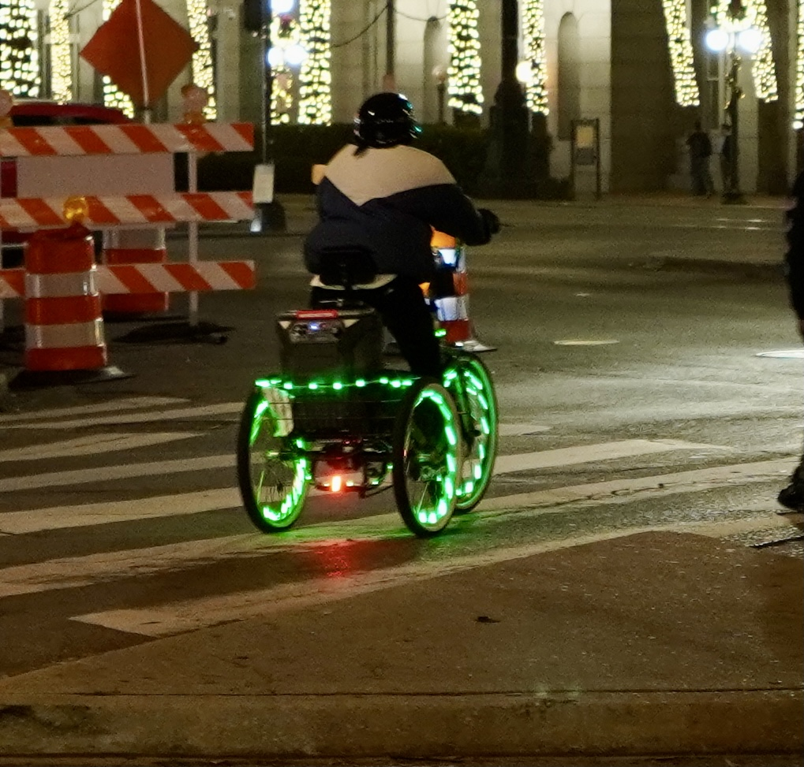
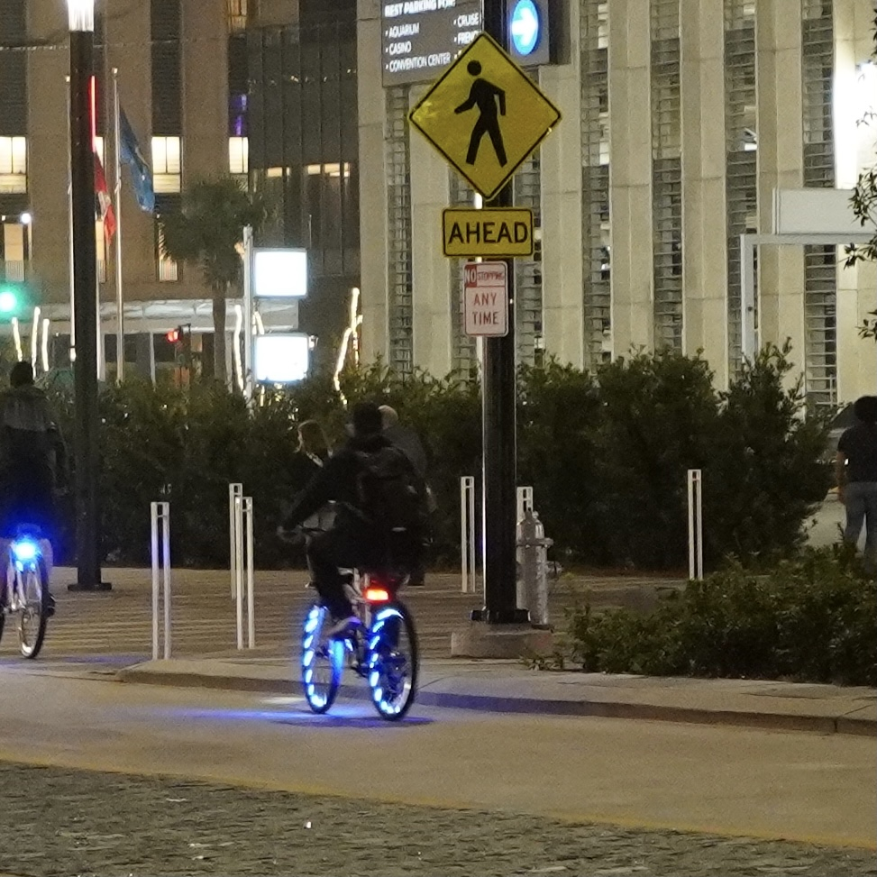

在NOLA开了两天的会，有些简单的想法，记录于此。
首先就是大师兄的勤勉。嗯，我在这边晚上听live jazz、写blog、看电影，感觉很normal。人却在工作，尤其是来的当晚还在看paper。见贤思齐，吾当自勉。但这早上7点起床就去开会，一直到傍晚5、6点，晚上还看paper的话真的有点扛不住呐。这可能就是为什么我这么菜吧:<
其次就是subaurora真的是个挺大的research community，well，至少我感觉比ulf大多了。虽然早上刚去的时候还惊讶其人少，后来发现迟到的教授们比昨天的参会的还多，吾辈不孤矣。老板是这三个section的chair和host，我没想到他主持的这么好，不疾不徐，儒雅有礼，节奏把控的是我这两天感觉最好的。结束后立马发了封彩虹屁的邮件hhh，好家伙，他回的邮件也是最近最长的，果然老板也是要经常夸夸的hhh。忽然感觉前途大好啊，毕竟我老板在这个领域还是有份量的，最近的program要完结了，让我想想新方向，正好这个就不错呐。
还有些关于NOLA的见闻。昨天晚上去听了live jazz，特别有名的一个表演。怎么说呢，大失所望罢了。不会说名不符实，毕竟可能人家就这个风格。我喜欢的jazz是很那种casual，没有喧嚣，舒缓而写意，偶尔的即兴delightful但不能一直high。但今天这个band，两个高音trumpet此起彼伏，还有个中音的trombone间杂其中，加上狭小的房间，好家伙，这真的是穿云裂石，只觉吵闹…不过低音部的sousaphone (扛号)、base drum，drum我还是很喜欢其韵律和节奏的。anyway，我只是个伪jazz迷，喜欢的还是la la land里面的那种jazz，还是有saxophone的jazz。

附上这两天的图和一个让我更喜欢NOLA的行进乐队（拍视频还是要手稳，尤其是不能随着音乐晃动和乱走:<<<）。



